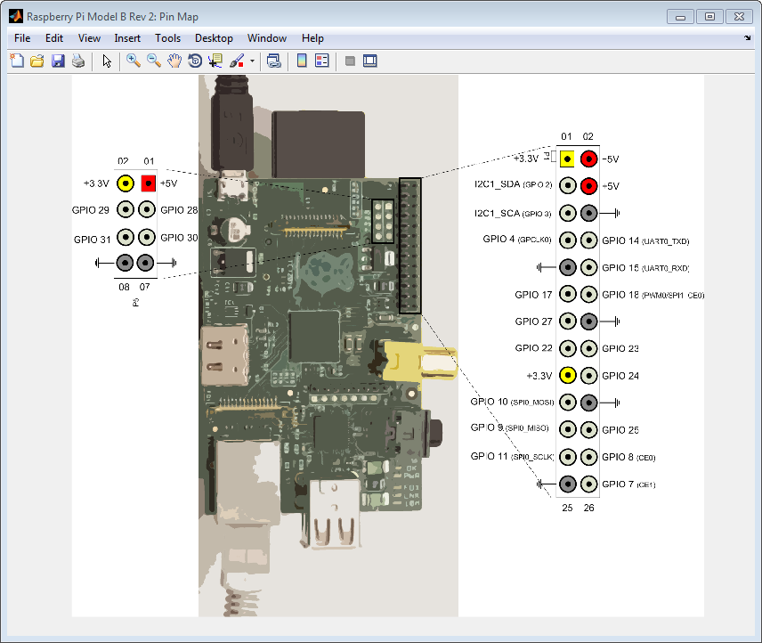

This example shows how to create a connection to a serial device, write data to the device, and read data from the device.
By default, the serial console in the customized version of
Raspian Wheezy on your Raspberry
Pi™ hardware is enabled. To use the serialdev,
the serial console must be disabled.
Excessive voltage and current can damage the Raspberry Pi hardware. Observe the manufacturer’s precautions for handling the Raspberry Pi hardware and connecting it to other devices. For more information, see https://www.raspberrypi.org/technical-help-and-resource-documents.
Create a connection to the Raspberry
Pi hardware using raspi.
mypi = raspi
Show the location of the Tx and Rx pins, GPIO
14 (UART0_TXD) and GPIO 15 (UART0_RXD),
on the GPIO header.
showPins(mypi)

Raspberry Pi hardware uses +3.3V. Do not connect Raspberry Pi hardware directly to devices that use higher voltages.
Connect the Raspberry Pi board to a +3.3V serial device.
To receive data, connect the GPIO 15 (UART0_RXD) pin
on the Raspberry
Pi board to the TxD pin on the serial device.
To transmit data, connect the GPIO 14 (UART0_TXD) pin
on the Raspberry
Pi board to the RxD pin on the serial device.
Connect a ground pin, GND, on the Raspberry
Pi board
to the GND pin on the serial device.
Connect a +3.3V pin on the Raspberry
Pi board
to the VCC pin on the serial device.
Before continuing, research the manufacturer’s product information to determine which baud rate, data bits, parity, and stop bit settings the serial device supports.
Use serialdev to create a connection to
the serial device and assign the connection to a handle.
myserialdevice = serialdev(mypi,'/dev/ttyAMA0')myserialdevice =
serialdev with properties:
BaudRate: 115200
DataBits: 8
Parity: 'none'
StopBits: 1
Timeout: 10In this example, the connection uses the default values
for baud rate (115200), data bits (8),
parity ('none'), and stop bit (1).
If the serial device requires nondefault values, use a set of optional arguments to override those defaults.
myserialdevice = serialdev(mypi,'/dev/ttyAMA0',115200,8,'none',2)
myserialdevice =
serialdev with properties:
BaudRate: 115200
DataBits: 8
Parity: 'none'
StopBits: 2
Timeout: 10This example overrides the default value of StopBits by
setting it to 2. It uses the other arguments to
maintain the correct sequence of arguments to the left of the rightmost
overriding value.
You can write values to the serial device.
write(myserialdevice,[10 12],'uint16')This example writes two values to the serial device. It overrides
the default precision, uint8, by setting it to uint16.
You can also read an array of values from the serial port.
output = read(myserialdevice,100)
This example reads a 100-element array of uint8 values
from the serial device.
If the serial connection times out during read operations,
you can adjust the time out period by assigning a new value to the Timeout property.
myserialdevice.Timeout = 20
myserialdevice =
serialdev with properties:
BaudRate: 115200
DataBits: 8
Parity: 'none'
StopBits: 1
Timeout: 20